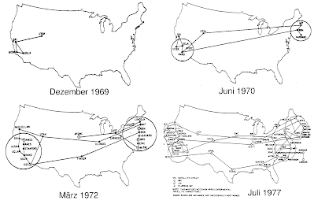
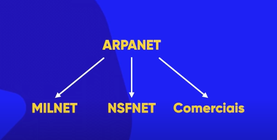
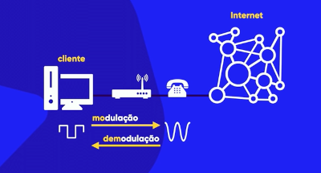

Introdução à programação
História da internet
Durante o período da guerra fria, assombrados pelo possível ataque da União Sovética, os Estados Unidos tinham uma enorme necessidade de desenvolver suas tecnologias para a guerra. pensando nisso Dwigt Eisenhower (militar), criou em 1969 a DARPA, com o intuíto principal de estabelecer uma forma de conexão entre bases militares para que dados e informações não fossem pedidas em caso de ataques inimigos. No mesmo ano a ARPANET foi desenvolvida e ligava inicialmente 4 pontos:
- Universidade da California - computador SDS sigma
- Universidade de Stanford - computador SDS 90
- Centro de matemática de Los Angels - computador IMB 370/75
- Base militar de Uta - computador DEC PDP 10
Para que esses computadores de diferentes modelos conseguissem se comunicar a universidade da califónia desenvolveu o protocolo NCP, apesar de ter funcionado era bem precário e apenas dois computadores podiam se comunicar por vez, o que limitava e muito seu uso. Pensando em solucionar essa limitação Bob Kahn desenvolveu o protocolo TCP, porém o protocolo apresentava problemas para identificar os computadores a serem feita a comunicação. E para corrigir esse problema Vint cerf criou o IP, protocolo de identificação que possibilitou a comunicação cliente x servidor sem erros. O protocolo TCP/IP é usado até hoje e já está na versão 6.
Em poucos anos a rede se desenvolveu o suficiente para atravessar não só o país, mas também o continente, em 1977 foi feita a primeira transmissão via satélite com a universidade de londres.
Em 1992, com a expansão acelada da ARPANET, os militares decidiram isolar sua rede de comunicação do restante e não adminisravam mais toda a rede. Assim ARPANET foi dividida em:
Assim esse conjunto de redes foi chamado de Interconect Networking, abreviado com o tempo para Internet.
Em 1993 a internet foi agraciada com um das mais revolucionárias tecnologias, que daria início à uma nova era virtual. Tim Berners-Lee desenvolveu o HTTP, protocolo que determina padrões e define as regras de transferência de informações entre cliente e servidor. A linguagem HTML também foi desenvolvida por ele e o HTTP foi basedo nela. A World Wide Web (www) é um conjunto de servidores especializados em HTTP e é uma sub-rede dentro da internet. Apesar de existir diferentes protocolos de transferências de informações, todos conseguem se comunicar entre si. E para que tudo isso funcionasse o primeiro navegador foi criado por Marc Andreesen, o Mosaic.
Como a internet funciona?
Todas as informações são compostas por dígitos binários (bit), zeros ou uns, que são a presença (1) ou ausência (0) de sinal (luz ou eletricidade). 1 byte é uma unidade formada por 8 bits e é a menor porção que pode compor uma informação. (ex: 01000001 = A). Esse sinal é distribuído por todo o planeta através de uma vasta infraestrutura física. Os continentes são ligados por imensos cabos subaquáticos e o interior é conectado pelas já existentes linhas de televisão, telefone ou antenas de celulares, além de balões de transmissão de dados.
As ondas de transmissão de dados geradas pelos dígitos binários (onda quadrada) não é compatível com os sistemas de telefone ou televisão, pois esses sistemas funcionam com ondas sinoides (onda redonda), sendo assim é necessário que, ao enviar uma informação do seu computador essa onda seja modulada para onda senoidal e ao rebecer uma informação essa onda seja demodulada para onda binária. Esse processo é feito pelo modem, aparelho instalado na sua casa pela empresa que fornece o serviço de internet.
Cliente x servidor: como nos conectamos?
Cliente é todo dispositivo que solicita um serviço (acesso à conteúdo online) e servidor é o dispositivo ou conjunto de dispositivos que disponibilizam o conteúdo solicitado. Todo dispositivo possiu seu próprio número de identificação para possibilitar sua localização precisa na rede, porém quando fazemos uma pesquisa na internet não utilizamos números e sim o nome do site, como isso funciona?
O DNS é um servidor especializado em fazer a ligação entre nome do site e o número IP. Quando fazemos uma pesquisa a solicitação primeiro vai para o servidor do DNS que identifica o IP atavés da URL e devolve essa informação para o seu computador, só aí o seu computador faz a solicitação diretamente para o servidor que você deseja.
Domínio e hospedagem
Domínio é o nome do seu site, é único e precisa ser pago para ser mantido. Uma URL é o endereço que o DNS usa para identificar seu IP, ela é composta pelo seu domínio e mais algumas informações, como: protocolo, sub-domínio, caminho e TDL's que fazem parte do domínio e podem variar entre generic TDL (ex: .com .org .net) e country code TDL (ex: .br .uk .ar).
Hospedagem é o serviço de armazenamento para seu site que os servidores disponibilizam, também é um serviço pago. Esses servidores possibilitam que sei site seja acessado por outros dispositivos. Data centers são os locais especializados onde esses servidores ficam localizados.
Os data centers abrigam uma infinidade de servidores e bancos de dados, além de processar grandes quantidades de informação. Eles podem estar montados em uma sala, em racks ou armários metálicos ou até mesmo em edifícios próprios. Precisam ter proteção contra incêndios, além de sistemas de resfriamento para manter temperaturas estáveis. Em geral, ocupam grandes galpões e o acesso de funcionários é restrito em função da segurança. A localização deles precisa ser estratégica, tendo fácil acesso a redes de energia independentes, tantas redes de dados ou links quanto possíveis, além de proximidade com grandes cidades. Isso porque as atividades e serviços de vários setores da economia dependem deles: energia, iluminação, telecomunicações, Internet, transportes, tráfego urbano, bancos, sistemas de segurança, saúde pública, entretenimento, e muitos outros.